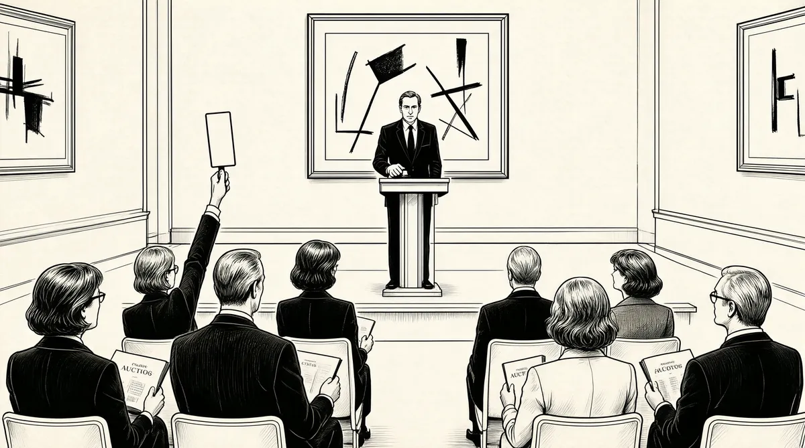

第50章 卵巢彩票

巴菲特在国会上的证词和他解救所罗门的行为让他从一个富有的投资商变身为国家英雄。发生在所罗门中的事情并不只是一个好人还是坏人的故事这么简单，巴菲特用一种反传统的方法解决了问题：对于那些法律条文的制定者和推行者，巴菲特并没有卑躬屈膝，而是以一种平等的方式化解了危机。这样的做法触动了人们心中最善良的一块领地：诚实最终可以得到回报，罪恶可以通过善良来化解。当一切丑闻平息的时候，巴菲特的名气也随之飙升，随之飙升的还有公司的股价，伯克希尔–哈撒韦的股票突破了每股10000美元，公司的资产总值达到了44亿美元！苏珊手里持有的股票总值达到了5亿美元！那些从1957年开始对伯克希尔进行投资的人，只要他们没有中途退出，那么他们当初每投入1000美元就能得到350万美元的回报！
现在巴菲特身边总是围绕着各种各样的人，只要他走进某个房间，便立刻令其蓬荜生辉。巴菲特所到之处，人们都用无比虔诚的眼神看着他，希望能和巴菲特握一下手，哪怕是碰他一下也好。在股神面前，人们紧张得说不出话来，或者干脆就是胡言乱语，不管巴菲特说什么，人们都用一种仰视的眼神望着眼前的英雄。
我21岁的时候就能给人们提供投资意见了，那时的我非常擅长告诉别人怎么做，不过当时没有人听我的。也许那时我说的话是充满智慧的，即便如此我也不会像现在这样引来这么多关注的目光。现在即使我说出一些最愚蠢的话，也有些人会认为我说这话或许有什么暗含的意思。
忽然间，巴菲特开始生活在光环之下，总是有记者不断给他打电话，有人跟踪他，而目标只是为了要一张巴菲特的签名照片，巴菲特也因此成了摄影师们的最爱。美国好莱坞老牌影星嘉宝写信向巴菲特要一张签名照。作家们开始着手写关于巴菲特的书，那些天天和巴菲特一起工作的人更是见证了这种狂热的气氛。一天一位女士出现在了巴菲特的办公室，她不断地向巴菲特鞠躬，最后连格拉迪丝·凯泽都生气了，“你不要再给他鞠躬了！”
人们把巴菲特捧上了天，但是所罗门的雇员还有之前被该公司解雇的雇员们并不这么看，他们自然不会对巴菲特心存任何感激之情。在他们看来，是巴菲特抑制了公司的发展，剥夺了他们原本自由的公司文化，破坏了公司原来发奖金日的喜庆气氛（之前巴菲特曾下令削减员工奖金）。他们更是知道巴菲特从一开始就对进行套期交易的所罗门公司十分鄙视，这一点他们比谁都清楚！几乎所有在所罗门工作的人都有一肚子的苦水要吐，而且都是有关巴菲特的。不久，有关巴菲特在工作时极度理性甚至偏向冷血的态度与他平凡的外表之间形成巨大反差的报道开始见诸报端。人们对巴菲特的理解出现了分歧，他究竟是那个坐在走廊里，手里拿着一杯柠檬汁讲故事的和蔼老头，还是那个深谙投资理念的传奇富豪？作为一家投资银行董事长的巴菲特，现在却大肆宣扬华尔街不过是一个金融骗子聚集的是非之地，巴菲特到底在干什么？人们对这一切充满了好奇。
巴菲特希望能把所罗门的员工获得薪酬的方式与股东的利益联系起来，但是他的重点却在相关的赔偿问题上。巴菲特深知几乎所有行业都存在自身利益与客户利益之间不可调和的矛盾，解决好赔偿问题有利于他更宏观地把握大局，但是解决这个问题的关键所在就是全盘抛弃所罗门公司原来的经营战略，这几乎是对所罗门公司的颠覆！1991年，《华尔街日报》和《新共和报》1都在抨击巴菲特两种截然不同的生活方式——一方面，巴菲特总是说自己是美国中西部的代表，出生于一个中产阶级家庭，每天都要很早起床为工作而奔波，但另一方面，巴菲特也会经常宴请那些社会名流。两种完全不同的生活方式让媒体咂舌，他们希望能在巴菲特身上挖出一些大新闻。《华尔街日报》在侧栏版面里刊登了一条这样的新闻，“巴菲特只和有钱有势的人交朋友”，并在文中指出巴菲特通过结交像美国大使沃尔特·安嫩伯格夫妇这样的高官抬高自己的身价。2不过文章中被点名的几位也在事后做出了回应，否认了报纸上的说法，这其中就包括汤姆·墨菲和比尔·盖茨，而后者只是巴菲特新近结交的朋友。其实墨菲是先于巴菲特认识盖茨的，两人就墨菲在电视广告的制作上所费不赀一事在巴菲特集团会议上聊了很久。而在《华尔街日报》笔下，这段对话被歪曲报道为表明巴菲特集团在思考广告价格的走势以及正常的广告费用应该是什么水平，而这可能成为反垄断的“灰色地带”。3对这一不实报道，巴菲特和朋友们曾多次找报社进行交涉，但始终没有什么结果。之前，盖茨曾因微软与IBM公司涉嫌垄断个人电脑软件市场而遭到了联邦政府的调查，所以人们普遍认为盖茨不想再次搅入有关反垄断的事件，甚至不希望把自己放大在公众面前。事后，巴菲特收到了一封盖茨亲笔所写的致歉信，后者对这一令人难堪的报道困扰到巴菲特表示了歉意。4而那时他们两个人认识还不到5个月。
1991年美国独立日（7月4日）那个周末，巴菲特和盖茨见面了。这次会面是在凯瑟琳·格雷厄姆和她所拥有的《华盛顿邮报》的主编梅格·格林菲尔德的倡议下进行的，地点选在了华盛顿州的班布里奇岛。他们希望巴菲特和盖茨两位巨人能在这里过一个周末，放松一下他们的神经。不过对于巴菲特来说，他并不愿意去：从西雅图到班布里奇岛坐轮渡大约需要半个小时，但要离开这里，只有乘船、水上飞机或者搭便车三种方法，只是这次聚会凯瑟琳他们什么交通方式也没有提供，要想离开，对于巴菲特来说很困难。此外，格林菲尔德建议巴菲特参观胡德运河附近的一处四居室的建筑，这是盖茨为家人修建的小别墅。对于盖茨，巴菲特还是非常欣赏的。巴菲特比他年长25岁，他知道盖茨是一个非常聪明的人，更重要的是，一直以来，两人就是《福布斯》财富榜上争相被人们比较的对象。不过，以巴菲特对于IT业人士并不感冒的性格，他自己是肯定不会加入凯瑟琳的周末之旅的，但是在格林菲尔德的劝说下，巴菲特动摇了。格林菲尔德告诉他：“你肯定会喜欢上盖茨的父母的，而且还有很多有意思的人也会去。”最终，巴菲特还是同意了。
凯瑟琳和巴菲特驱车赶往格林菲尔德的“度假胜地”，虽然沿途有些泥泞，但是眼前的风景还是令巴菲特眼前一亮：房屋墙壁全部用玻璃打造，非常具有现代气息，屋旁粉红色和紫色的豌豆花在风中轻轻晃动。但是巴菲特的好心情却被主人的第一句话打乱了，虽然这里的风景很好，可以直接看到普吉特海湾，但却只有两间客房，凯瑟琳和另外一名记者罗利·埃文斯及夫人住在这里，而巴菲特则被安排在了远处另一套房子的一间小客房休息。当巴菲特赶到自己房间的时候，看到工人们正在为他搭建临时床位，唯一的解释就是这套房子的客房也都住满了人。
事实上，巴菲特并不介意住在哪里，他并不挑剔居住环境，而且在他入住之前，格林菲尔德已经在房间里放满了樱桃可乐、喜诗糖果，还有其他的小零食，把一切布置得都非常舒适。但是当巴菲特想上洗手间的时候却发现了问题，洗手间的门上挂了一个“NOTP”的牌子，巴菲特一时间没有搞懂，所以他叫来了凯瑟琳和格林菲尔德，但是两个人也都没有明白是什么意思，最后他们猜测可能是洗手间里的管道出了什么问题所以不能使用。如果巴菲特要去洗手间，白天的话还好一些，如果他正巧在格林菲尔德的住所那边自然没有问题，但由于那里和巴菲特住的地方相隔较远，所以他只能借用附近加油站的公共洗手间了，格林菲尔德给出了这样的建议。
当晚，巴菲特坐在自己的房间里，吃着格林菲尔德为他准备的零食，喝着可乐，一直在想洗手间牌子上“NOTP”的意思，为什么门是锁着的？5第二天，包括格林菲尔德那边的所有客人也没有弄明白这究竟是什么意思。
早饭后，格林菲尔德陪客人们一起去附近小镇观看庆祝独立日的民众游行。大街上很热闹，男人们穿着蓝色的燕尾服，头上戴着象征美国国旗的星条旗帽子，帽子上还有铜制的标牌；救火车、救护车、老爷车慵懒地等在路旁，偶尔有谁家的小狗跑过来，还穿着主人家里自制的节日盛装；人群中，在啦啦队长的带领下，美国国旗在人群中传递着；接着又过去了一辆老爷车，基瓦尼斯俱乐部（美国工商业人士的一个俱乐部）的成员们结队走了过来。从镇上回来，格林菲尔德在自己家里开起了一年一度的户外派对，客人们都穿着夏天的衣服，有几人还在一旁打起了门球，不听话的小球不经意间碰落了几株小花。
第二天，巴菲特穿了一件非常休闲的开襟毛衣，还把灰色的头发梳理得很光洁，这一天，格林菲尔德载着包括巴菲特在内的5个人去了盖茨的家。天啊！一辆普通汽车里坐了6个人，可以想象这会是多么拥挤！汽车足足开了95分钟。巴菲特不禁开始抱怨了：“我们究竟去那儿干什么？难道要我们守着这些人待一天吗？我们究竟要保持高雅客气的待人接物方式到什么时候？”
想到要见到巴菲特他们，盖茨的心理何尝不是一样呢？“我和母亲谈了谈，而结论就是母亲质问我，问我为什么不来参加家里的聚餐？我告诉她我太忙了，走不开，可她却搬出了凯瑟琳·格雷厄姆和巴菲特两个人，说他们都参加了！”其实，盖茨是更希望见到凯瑟琳的，这位已经74岁的老人现在成了传媒界的传奇，不过她的脾气并没有因为时间而改变，依然是充满贵族气质、非常自我，这样的性格很容易让人把她和伊丽莎白女王联系在一起，但是，“我又告诉我的母亲说，我对那个只会拿钱选股票投资的人一点儿都不了解，我没有什么可以和他交流的，我们不是一个世界的人！不过在母亲的坚持下，我还是答应了。”
就这样，盖茨选择乘坐直升机回到了班布里奇岛，以使他能在第一时间脱身。当一辆小型车停在车道上时，盖茨十分惊讶地看到了那些名人，那些格林菲尔德请来的客人，只是他们的装束有点儿可笑，看起来有些像杂技团的小丑。6
在格林菲尔德众多的客人中，他最先认识了凯瑟琳。这位74岁的老人被介绍给盖茨时，她看到了一个“刚刚毕业的小伙子”——盖茨给人的第一印象就是这样，他穿得很随意，一件红色的外套里面是一件高尔夫T恤，衣服的领子稍稍翻着，之后盖茨还邀请凯瑟琳乘坐水上飞机。而那一边，巴菲特已经和盖茨的父母老比尔和玛丽夫妇聊了起来。7接下来自然而然，巴菲特和盖茨就认识了。
对于两位巨人的第一次见面，很多人都在仔细观察。至少在一点上，巴菲特和盖茨是相似的，如果遇到不热衷的话题，他们会尽量选择结束。人们对于盖茨不善隐藏自己的耐心早有耳闻，而巴菲特，虽然在遇到感觉无聊的话题时不会再提前走开转而找本书看，但是他依然有自己的方法，他会在第一时间把自己从不感兴趣的话题中解脱出来。
在与盖茨的交流中，巴菲特还是和平常一样，没有过渡语言直奔正题，他问盖茨有关IBM公司未来走势的问题，他还向盖茨询问IBM是否已经成了微软公司不可小视的竞争对手，以及信息产业公司更迭如此之快的原因为何。盖茨一一做出了回答。他告诉巴菲特去买两只科技类股票：英特尔公司和微软。轮到盖茨提问了，他向对方提出了有关报业经济的问题，巴菲特直言不讳地表示报业经济正在一步一步走向毁灭的深渊，这和其他媒体的蓬勃发展有着直接的关系。只是几分钟的时间，两个人就完全进入了深入交流的状态。
我们一直在聊天，没完没了，根本没有注意到其他人。我问了他很多关于IT产业的问题，但我从来没有想过要理解属于他的那个行业。盖茨是一个很不错的老师，我们谁都没有结束这次交谈的念头。
随着时间的推移，巴菲特和盖茨的对话开始吸引越来越多人士的注意，其中就包括西雅图最为知名的那些权贵：众议院议长汤姆·福利，伯灵顿北方公司董事长兼首席执行官杰里·格林斯泰因，美国前环境保护署署长比尔·拉克尔肖斯，三任州长的公子阿瑟·兰利及其太太简、儿子阿特，格林菲尔德的好友乔·格林兰德，另外还有一些当地的医生、律师、报业总裁、艺术家，他们都成了两人谈话的看客。8巴菲特和盖茨边走边谈，从花园来到了海滩，人们也竞相尾随。“我们根本没有注意到这些人的存在，没有发觉周围还有很多举足轻重的人，最后还是盖茨的父亲看不过去了，他非常绅士地对我们说，他希望我们能融入大家的这场派对，不要总是两个人说话。”
之后比尔开始试图说服我购买一台电脑，但我告诉他我不知电脑能为我做些什么，我不在意我所投项目的具体变化曲线，我不想每5分钟就看一下结果，我告诉他我对这一切把握得很清楚。但比尔还是不死心，他说要派微软最漂亮的销售小姐向我推销微软的产品，让她教会我如何使用电脑。他说话的方式很有趣，我告诉他：“你开出了一个让人无法拒绝的条件，但我还是会拒绝。”
一直到太阳落山，鸡尾酒会开始，两人的谈话还没有结束。盖茨之前过来时乘坐的飞机将在傍晚离开，只是飞机走了，盖茨没有走，他依然在享受与巴菲特聊天的乐趣。9
晚饭的时候，盖茨的父亲问了大家一个问题，人一生中最重要的特质是什么？我的答案是“专注”，而比尔的答案和我的一样！
当巴菲特说出“专注”这个词的时候，不知道在座的人群中有多少能够体会他这个词的含义，但一直以来，专注就是巴菲特前行的重要指南。专注是什么？是对于完美的追求，而且这种禀性是特有的，不是谁说模仿就能模仿得了的。专注是对于专业精益求精的追求，正是由于专注，才成就了托马斯·爱迪生这个美国历史上最伟大的发明家；正是由于专注，才诞生了沃尔特·迪士尼这位享誉世界的动画片之父；正是由于专注，才让大家认识了美国灵魂乐教父詹姆斯·布朗。同样，专注还是完成伟大事业的决心，否则，人们就不会看到首位女性国会议员珍妮特·兰金力排众议反对美国参加两次世界大战，而这两场战争带给世界的除了灾难就是痛苦。专注还包括对于理想的追求，即便是这位身家过亿的人，也会因为一件小事，一个写着“NOTP”字样的牌子而想要探个究竟并迫切需要找到一个答案。
不过在那个周末，“NOTP”这个牌子的含义并没有被哪个专注的人揭开谜底，他们后来才终于知道，它的意思是洗手间里可以处理厕纸的管道坏了。谜底大白天下，巴菲特也解脱了，他再也不用去加油站的公共洗手间了。不过，还是有人对这件小事津津乐道，凯瑟琳、格林菲尔德就是其中两位，至于后来他们在向盖茨一家介绍巴菲特时，还免不了把这件事情再抖出来。
一天后，巴菲特离开班布里奇岛回到了奥马哈。在与盖茨的接触中，他了解到这位微软总裁非常聪明，而且他对自己所在行业的发展非常了解。不过巴菲特在投资过程中始终不曾对科技股抱以信心，其实从一开始他告诉婶婶凯蒂不要投资控制数据公司的时候，巴菲特就已经错过了从英特尔公司身上牟利的机会。当时英特尔公司还处于起步阶段，如果投资肯定会有不错的回报，但是巴菲特从来没有这么做。在他看来，信息产业公司更迭的速度太快，产品即便生产出来也都早已过时，这的确是他当初的想法。但现在，巴菲特的观念似乎出现了变化，对于科技股的好奇让他购买了微软公司100股的股份，用他的话说就是通过购买股票能够更好地了解这家公司的发展方向。早在巴菲特之前，格林奈尔学院也曾在英特尔公司身上投资，不过他们在赚钱后很快就把手里的股票卖掉了。10而即便买了微软的股份，科技股依然是巴菲特不敢深入触碰的领域，“像英特尔这样的公司的产品对未来依赖得太过严重，其产品未来的价值走向直接影响到产品本身，而这样的行业是我不熟悉的！”这就是巴菲特不去选择科技股的原因。但是在之后的巴菲特集团会议上，巴菲特却邀请了盖茨参加。此后不久，巴菲特接到了来自所罗门法律部经理唐·福伊尔施泰因、公司高管汤姆·斯特劳斯的电话，而之后两个月，除了所罗门，巴菲特什么也无暇顾及了。
所罗门公司出现的情况着实令巴菲特忙了一段时间，在与国会议员、立法人员召开了数天的会议后，巴菲特终于走出了会议厅——位于世贸大厦七层会议室的房间，那时已经是10月份了，而巴菲特的下一站就是温哥华，巴菲特集团大会正在此地召开。这次会议是由FMC董事长鲍勃·马洛特夫妇组织的，马洛特夫妇是北美文化的爱好者，会议期间，他们安排了宴会，并在席间穿插了北美土著舞蹈——一场舞长达数个小时，据相关人士介绍，北美土著舞蹈本来是要跳三天的，而当晚的演出是浓缩版，即便如此，这几个小时的演出仍然让这些金融高手备受煎熬，坐在硬硬的木质板凳上哈欠连天，但没有一个人提前离开。同样感觉不到土著舞蹈魅力的还有巴菲特，当坐在身边的罗克珊·布兰特问他舞蹈和所罗门公司哪个更让人难以忍受时，巴菲特毫不迟疑地说：“这个舞蹈！”11
也来参加会议的盖茨并没有去看这场土著舞蹈演出，因为观看舞蹈不是他此行的目的，这次来到温哥华，盖茨只想弄明白一件事，巴菲特集团即将从20世纪50~90年代中分别评选出每个年代最有价值的10家公司，盖茨想知道这个榜单会不会有所变化。是什么能让一个行业有如此高的竞争力？这些公司得以经久不衰的优势是什么？为什么其他公司没能维持住自己的优势？从行业竞争的大环境来看，并不是所有公司都能保持住自己的优势地位。
会议那天，盖茨乘坐的飞机由于下雾延迟了一些，在他和女友梅琳达到达会议大厅后，他们悄悄地溜进去坐在了后排。起先，梅琳达以为盖茨只想听一听就走，但是当幻灯片播放到第四张的时候，她就知道提前离开会场是不可能了。12与会的汤姆·墨菲和丹·伯克——同时也是IBM公司的两位董事会成员，开始讨论为什么作为硬件之王的IBM公司不能在软件市场上也大展拳脚。就在两人发表完自己的观点后，巴菲特说话了：“我想我们中间还有人能对这个问题作些补充。”这时人们回过头来才注意到盖茨的存在。13讨论随后继续：假如你是60年代红极一时的美国西尔斯公司的老板，你为什么不能把“发掘”最聪明、最能干的员工以实现最大利益作为一种策略来实行？这会不会成为你继续领导公司的潜在障碍？在讨论者们给出的答案中，如果不考虑从公司角度出发的那部分，都是充满着一种骄傲、自满的情绪在里面的，这也就是巴菲特一直以来所说的“制度性强制力”（institutionalimperative）。制度性强制力是指公司或企业会为了自身利益而推行一系列的改革或者举措，而在策略上，他们并不希望走在同行的前面，而是站在大部队里。有些公司从不鼓励年轻人开拓创新，有些公司则是很少对行业进行调整，因为公司的管理层并不适应这种变革。人们都知道要想真正解决这些顽疾并不容易。过了一会儿，巴菲特出了一个题目来缓解会议室的气氛——每人挑选一只自己最喜欢的股票。
“柯达怎么样？”比尔·鲁安在向盖茨征求意见，他想看看微软老板会怎么说。
“柯达？柯达就是烤面包！”盖茨给出了答案。14
在座的没人会想到盖茨能给出这样的比喻，在1991年那个时候，即便是美国柯达公司本身，也难以用“烤面包”来形容自己。15
为什么盖茨会有这样的论断，时任洛斯保险公司老板的拉里·蒂施给出了解释，当时洛斯公司拥有哥伦比亚广播公司一定数量的股份：“可能是因为比尔知道电视网络媒体注定难逃消亡的命运！”
盖茨说：“不，不只是这么简单。电视媒体和摄影胶卷业有很大的不同，从本质上，电视媒体不会受到太大的生存威胁。当人们的选择多元化时，收视率会有所下降，但电视媒体是内容提供商，它可以通过再加工来应对这个问题。当电视与互联网相结合时，电视媒体面临着一种有意思的挑战。然而，摄影胶卷业就完全不同了，当摄影不再需要依靠胶卷的时候，胶卷生产技术就再也没有什么用武之地了！”16
盖茨发表完自己的见解后，会场的所有人都期待能和他聊上几句，盖茨能解释新数字化时代会为人们带来什么。“之后，我们知道会场将搬到一艘游艇上去。”盖茨说道，这艘名为“冰熊”的游艇是巴菲特的好朋友沃尔特·斯科特夫妇特意准备的。“凯瑟琳非常细致，她尽量调整好提问的方向，避免这成为我和沃伦两个人的对话。”还好有凯瑟琳·格雷厄姆在，以巴菲特“黏人”的性格，他肯定不会拒绝与盖茨深入了解的机会，所以会场上经常能看到的就是两个人形影不离的身影。之后，大家登上了“冰熊”游艇，在凯瑟琳的引荐下，盖茨认识了蒂施、墨菲和基奥等人，他和梅琳达就这样成了巴菲特集团的一员。17向盖茨提问的人总是络绎不绝，中间休息的时候，盖茨还向墨菲抱怨日益高涨的电视广告费用。一个月后，《华尔街日报》上披露了盖茨和墨菲交谈的内容，还把巴菲特描写成了地地道道的伪君子，而不是说他具有多重性格。盖茨和墨菲对此很抱歉，这并不是因为他们有关广告价格的那段对话，而是因为他们回答了一个记者的提问，这名记者当时看上去并没有携带任何录音设备，想必就是他报道了这些。
1993年，所罗门公司的收购案终于宣告结束，巴菲特在解决所罗门公司丑闻这一过程中居功至伟，这也让伯克希尔–哈撒韦的股票价格翻了一番。就在巴菲特以自己的方式处理古特弗罗因德仲裁案时，伯克希尔–哈撒韦的股价达到每股18000美元。巴菲特的身家达到了85亿，苏珊手中持有的伯克希尔–哈撒韦的股份累计达到7亿美元。那些在1957年从一开始就在伯克希尔–哈撒韦投资的人也都成了富翁，当初投资1000美元现在就能有600万美元的回报！巴菲特正式成为美国财富第一人！
假期过后，巴菲特和卡罗尔·卢米斯开始了每年必修的功课，撰写并出版给股东们的信，而现在能看到这封信的并不只是伯克希尔的股东，或者只是美国本土的读者们，这封信已经传播到全世界，几乎全世界的股民现在都成了巴菲特忠实的读者。1994年5月，就在法庭裁决古特弗罗因德得不到一分钱赔偿的同一个月，伯克希尔–哈撒韦在奥芬剧院召开了一年一度的股东大会，约有2700人到场参加。早在会议召开前，巴菲特就告诉自己名下的喜诗糖果公司、鞋业公司和《世界图书百科全书》出版公司在股东大会会场外布置展位以便于销售。巴菲特的这个想法果然奏效，喜诗糖果累计销售达到800磅，鞋业公司共卖出超过500双鞋，18图书的销量也很好，只是那时巴菲特并没有想到《世界图书百科全书》出版公司会和柯达公司一样最终也成为互联网发展过程中的牺牲品。在股东大会会场外的成功让巴菲特非常兴奋，他先后来到了波仙珠宝店和内布拉斯加家具城。“他（巴菲特）来到家具城后直奔床垫区，”家具城总裁路易斯·布鲁姆金说，“他竟在那里帮我们推销产品！”19巴菲特开始仔细推敲在股东大会会场外兜售产品的促销方案，所以他才坚决地把会址从剧院搬到了假日酒店，因为假日酒店的面积更大，可以容纳更多的摊位。巴菲特甚至定下了明年的计划，让金厨刀具也加入到股东大会促销的行列里来。20
随着巴菲特成为众人敬仰的对象，身边人的生活也因此受到了影响。巴菲特的身家已超过80亿，巴菲特基金会也跻身全世界规模最大的5家基金会之列。巴菲特和苏珊还决定死后把遗产悉数捐献出来，这样在巴菲特去世后，以他的名字命名的基金会将成为伯克希尔–哈撒韦最大的股东！为了这个目标，巴菲特将苏珊，也就是巴菲特基金会的主席吸纳到了伯克希尔–哈撒韦的董事会里来，虽然苏珊对于金融、投资并不热衷，但这却代表了巴菲特的诚意。1994年以前，基金会每年大约捐出350万美元，而在1994年巴菲特把这个数字翻了一番，700万对于像他和伯克希尔–哈撒韦这样规模的公司来说并不算多，这样，巴菲特基金会和主席苏珊也逐渐走进了人们的视线。
当苏珊决定和巴菲特分居的时候，她就已经决定要过一种平淡、安静的生活。尽管苏珊把家搬到了旧金山，但她依然保持着与巴菲特的婚姻关系。苏珊算不上是一个睿智的思考者，当她发现自己的丈夫巴菲特一夜之间成了金融界的巨人，成了投资界人人敬仰的偶像时，她惊呆了，因为自己的生活已经牢牢地和巴菲特连在了一起。一方面，苏珊希望最大可能地保护自己的私人空间不受侵犯，她是一个向往自由的人；另一方面，苏珊也希望能取悦巴菲特，她很积极地运作基金会。然而她感觉自己被这样的生活困住了。为了避免公众的注意，她在旧金山的生活尽量低调，并一再解释自己在巴菲特的投资过程中算不上重要因素，只不过是巴菲特盛名之下的附属品，这样就没有人会对她的生活感兴趣，也没有人愿意费时间撰写有关她生活的点点滴滴。为了能保护好属于自己的隐私，苏珊甚至开始了颠覆性的生活，尽量避免与“巴菲特”这三个字联系在一起，她还多次在不同的人面前表达对巴菲特的怨恨，让人产生一种错觉，以为是巴菲特毁掉了她原本平静的生活。
尽量避免与巴菲特联系在一起，并不代表苏珊不再与之见面。每年7月，两人会一起出现在太阳谷的名人派对上，会一同参加每两年举办一次的巴菲特集团会议。圣诞节、新年，他们和三个孩子也都会在加州拉古纳海滩的住所一起度过，每年5月份有两周时间，一家人还会在纽约小聚。苏珊也会经常看望自己的孙辈们，或者把他们接到翡翠湾那边住上一段时间。虽然苏珊把打理巴菲特基金会的工作都交给了女婿艾伦·格林伯格，但她也会和艾伦一起处理，两人还曾一起远赴越南。而苏珊其他时间的安排是非常丰富多彩的，派对、音乐会、艺术展、水疗、足部按摩，以及逛街消费是她生活中不可缺少的一部分。苏珊还有一大嗜好就是不停地对拉古纳海滩住所进行装修，为朋友们寄送各种各样的卡片和礼物，当然和朋友一同旅游也是她非常热衷的活动。但对于苏珊来说，没有哪件事能比公益活动更重要，没有哪件事能把在病床旁照顾病人的苏珊拉开。
但苏珊平静的生活还是被打乱了，这次打扰她的是疾病。1987年和1993年，苏珊两次经历了脓肿切除手术，她还在1993年切除了子宫。私人助理凯瑟琳·科尔不得不一次次面对自己的好朋友同时也是老板的苏珊走入手术室，而且越来越频繁。术后，科尔曾试图说服苏珊戒掉她喜欢吃的土特希卷、曲奇和低脂零食，并加强锻炼，但是并没有收到成效。苏珊家里的普拉提健身器械上满布灰尘，而苏珊自己却陷在照顾别人的乐趣中。21每次，科尔在苏珊生病住院后给她的子女们打电话时，所有人都表现得非常镇定，似乎对苏珊住院已经习以为常22。“感谢上帝我还活着！”苏珊每次都这样说，然后继续投身于她热爱的慈善事业中。
为了能更好地照顾病人，苏珊把自己的公寓改成了疗养院，亲自照顾那些需要帮助的人。第一位被苏珊护理的对象是苏珊的一位艺术家朋友，由于感染上了艾滋病将不久于人世，正是苏珊陪他走完了生命的最后几周。这段时间里，科尔也帮了苏珊很大的忙——当基金会的其他人员忙来忙去时，科尔只能在病床旁边陪伴着苏珊的朋友，似乎人在离开人世前总是十分脆弱的，这位艺术家不停地向科尔询问有关基金会运作、有关拉古纳海滩住所装修的问题，科尔也只能一一作答。23此后，但凡有苏珊的朋友患上了艾滋病，苏珊都会在他们生病的最后时间把他们接到自己的家里，或者帮助他们完成最后的心愿，即便是去日本、去印度的达兰莎拉，苏珊也帮朋友达成了心愿。在某位朋友去世后，苏珊应朋友的要求将葬礼改成了放映法国电影《假凤虚凰》，这些都在说明苏珊是一个值得信赖的好朋友！
在苏珊的三个子女中，受到母亲影响最大的恐怕就要数大儿子豪伊了。继承了母亲精力旺盛的优点，豪伊也亲身感受到父亲的名气对于自己的影响。1989年，他成为了内布拉斯加州酒业发展委员会的主席。在这期间，豪伊结识了ADM公司的首席执行官马蒂·安德烈亚斯，两人也成了好朋友。ADM公司是美国著名的农业公司，总部设在伊利诺伊州，公司首席执行官德韦恩·安德烈亚斯，即马蒂的叔叔，和巴菲特同为所罗门兄弟公司的董事。两年后的1991年，ADM公司正式邀请36岁的豪伊出任公司董事，他也成了该公司董事会里最年轻的成员。
在1974年曝光的“水门事件”中，德韦恩·安德烈亚斯因非法发起政治斗争而被指控，后被判无罪免去了牢狱之灾，但他并没有因此收敛，先后向民主党、共和党进行捐助以期国会方面能通过削减酒业赋税的法令（这对ADM公司能产生直接的影响），由于捐助数量巨大而颇受争议。不过巴菲特很看不惯德韦恩的这种做法，他认为金钱和地位不应该也不能和政治混为一谈，这恰恰和德韦恩的理念背道而驰。
豪伊成为ADM公司董事6个月后，德韦恩建议其出任公司公共事务发言人。对于这个涉及公共事务的职位，豪伊没有任何经验，也没有人脉可以寻求帮助，但是在面对金钱和政治问题的时候，豪伊处处流露出来的都是巴菲特风格的处事方式。在为中学生募集资金的现场，人们就见识了巴菲特家族的风采。这次募集采用销售蛋糕的方式，这些蛋糕全都是学生们自制的，售价为每块50美分。当有人掏出一张5美元的钞票还要找零时，站在募集箱前的豪伊直视着人群说道：“我们没有零钱！”随后他又质问校长，“难道你们就是这么进行募集的吗?!”这之后整整一个下午，前来进行募集的人没有一个能要走零钱，因为豪伊根本不同意，所以只能是人们口袋里有什么面值的钞票，就投进去多大面值的钞票。24同样，在豪伊给父亲巴菲特打电话讨论工作时，他的口气也透露着精明。豪伊知道在父亲面前根本没有任何“想当然”的说法。“如果我接受ADM公司的工作，那么我在舍伍德基金会募集到的善款怎么办？”豪伊问父亲。巴菲特的建议则是不让豪伊把募集款带走。豪伊也听从了父亲的意见没有反驳。“那么农场的租借费用又要怎么算呢？”巴菲特最终决定让豪伊缴纳农场支出的7%作为租借款。25在讨论了其他几个问题后，豪伊决定把家搬到伊利诺伊州的迪凯特市，也就是ADM公司总部所在地，他决定接受ADM的工作邀请，出任公司发言人，并主管分析部门的工作。26
从表面上来看，豪伊在ADM公司的工作和“巴菲特”这个响当当的姓氏没有什么关系，否则豪伊也不会接受ADM的工作邀请，而且ADM公司涉及乙醇的使用和豪伊之前的工作经历相关，这更让人觉得ADM公司吸纳豪伊没有什么特别的念头。况且在巴菲特的调教下，豪伊也对使用特权非常反感，一切似乎都是顺理成章。但事实证明豪伊还是太天真了！尽管他知道周围有很多人都在觊觎父亲的财富，并一直使自己远离做棋子的角色，但是豪伊对于大公司的理解还是不够全面，在成为公司公共事务发言人的时候，他还没有意识到自己正在一步步被ADM公司利用。
其实从巴菲特的角度出发，他肯定是不会与ADM这样的公司或者是德韦恩·安德烈亚斯这样的人合作的，因为巴菲特非常反感把金钱和政治联系在一起，但他并没有阻止儿子豪伊进入ADM公司，为什么巴菲特会这样做？他希望儿子能在ADM公司学到一些有关商业运作的知识，以备今后为自己、为伯克希尔–哈撒韦服务。
据豪伊回忆，安德烈亚斯是一个难缠的人，而且对任何事的要求都很高。他会让豪伊从墨西哥购买磨粉机，还会让其仔细研究《北美自由贸易协定》里面的条款。但豪伊并没有因为安德烈亚斯的诸多要求就改变自己，他依然是一个积极向上的人，依然充满朝气和精力，保持着自己坦率而简朴的风格。在家庭聚会上，豪伊还会穿着奇怪的衣服从橱柜里钻出来博大家一笑。27在写给母亲苏珊的信中，豪伊的文风依然是朴实中带有真情。而他的办公室看上去也极具特色——看上去就像是十几岁小孩子的房间，ADM公司的玩具卡车、可口可乐公司的商标、饮料瓶子堆满了整个屋子。28现在的生活对于豪伊来说，就像是在最短的时间里学会商学院几年的课程，时间对他异常宝贵。
1992年，巴菲特邀请豪伊进入伯克希尔–哈撒韦的董事会，并表示在自己去世后，豪伊将出任公司非执行董事长一职。那时的豪伊资历尚浅，事实上他连大学都没有读完，与金融产业相比，豪伊更喜欢和自己的农场打交道，在进入ADM公司后他才算真正开始了自己的商业之旅。但巴菲特都表态了，别人还能说什么呢？在伯克希尔–哈撒韦，巴菲特是最大的股东，他完全有权任命自己的接班人，而且伯克希尔更像是一个家族产业，巴菲特认为由豪伊出任董事长能更好地保持公司的企业文化。而且经过了ADM公司的锻炼，巴菲特相信儿子正在逐渐成熟，迟早有一天能得到大家的信任。
不过从现在开始，巴菲特要好好反思一下了。一直以来他都不赞成“君权神授”和世袭制度，但是现在在伯克希尔–哈撒韦，当巴菲特宣布儿子豪伊将在自己死后出任公司的非执行董事长的时候，一切开始改变了。人们关心的是豪伊能不能在成为公司董事长后依然让伯克希尔–哈撒韦保持良好的发展状态，但这却不是现在需要考虑的问题，只要巴菲特还健在，这就不需要过早考虑。但巴菲特目前的用意很明白，不能让公司的权力集中在某一个人的身上，种种迹象都证明巴菲特在尽全力避免这种可能，因为他深知权力的集中很可能在日后成为公司发展的绊脚石，但权力的集中至少能带来一个好处，能将制度性强制力带来的危害减小到最低。如果在公司内部实行子承父业的制度，这最多就是压缩公司发展的潜力，但制度性强制力的作用将是伯克希尔–哈撒韦面对的最大难题。所以在两者中间，巴菲特选择了前者，任命豪伊出任公司非执行董事长只是他计划的第一步，他要在自己离开人世前把一切都规划好。
接下来，巴菲特先后把女儿苏茜和小儿子彼得安排进了巴菲特基金会董事会。人们心中都知道苏茜将在母亲苏珊去世后接管巴菲特基金会主席一职。巴菲特一直都认为，包括基金会在内的很多事务都是由“苏珊在统揽全局”，苏茜要想接过母亲的大权，肯定会在苏珊离开人世后，那将是很多年之后的事情，而现在巴菲特在其他一些事务上还需要女儿的帮忙，苏茜现在的职责是负责有关巴菲特在奥马哈的所有事务。她曾应父亲的要求，在奥马哈寻找一部适合巴菲特的“便宜”轿车，为此苏茜走了很长的路，也花了很多时间。苏茜还帮助巴菲特筹办奥马哈高尔夫精英赛，并为比赛培训志愿者。奥马哈高尔夫精英赛是由巴菲特所倡导的，由一些公司的首席执行官和名人们参加的一项慈善活动。29而随着时间的推移，巴菲特在出席各种场合时的女伴不再是凯瑟琳·格雷厄姆，后者已过七旬的高龄并不适合出现在巴菲特身边，股神的女伴换成了苏茜。巴菲特的女友阿斯特丽德出现在这种场面的机会并不多，通常她都是在动物园做义工，而且她也不喜欢这种宾客满堂的场面。尽管身为巴菲特的女友，但阿斯特丽德的生活并没有多少改变，和巴菲特身边其他人相比，名气与金钱带给她的变化的确要少得多。
小儿子彼得也没有因为父亲蜚声海外而为所欲为，这一点他和豪伊、苏茜没有区别，不过他的重点则一直在音乐上面。搬到了东部城市密尔沃基后，彼得和妻子玛丽购买了一处公寓，由于公寓的另外一个用途是彼得的工作室，所以室内装潢难免有些奢华，这和巴菲特家族一贯的作风并不相符，媒体也争相对此事进行报道。1991年5月，也就是在所罗门公司丑闻爆发前，彼得决定离婚，他和妻子玛丽的婚姻走到了尽头，整个离婚的过程拖了很长时间。对于儿子的这个举动，巴菲特表示理解，他身边的朋友、家人离异的不在少数，巴菲特也已经见怪不怪了。离婚后，彼得正式收养了一对双胞胎女儿埃丽卡和妮科尔。对于这次收养，苏珊的态度比巴菲特要积极很多，一直以来，苏珊就很疼爱这对双胞胎孙女，而巴菲特却有点冷淡。不过后来巴菲特也意识到收养能使彼得和前妻玛丽的关系进入到一个崭新的阶段，只是由于巴菲特没有这种经历，他一时之间也没有察觉。
其实彼得是一个很内向的人，离婚事件对他的影响很大，一直以来彼得在同行中并不是佼佼者，但离婚让他开始重新审视自己的人生。经历了内心的沉淀，他的事业得到了进一步的发展。之前，彼得已经发行了多张“新世纪”风格的单曲专辑。在阅读了一本关于小巨角河战役的小说《晨星之子》后，他对北美文化产生了极大的兴趣，并在创作中将其融入其中。之后，彼得参与制作了电影《与狼共舞》的配乐，并在电影首映礼上奉献了一场精彩的演出。在参加了电影《红字》和哥伦比亚广播公司一系列短片的音乐制作后，彼得开始筹办多媒体纪录片的相关事宜，该片再次引入了彼得喜欢的北美主题，主要描述了北美文化遗失和重塑的过程。
在音乐的道路上，彼得是受人尊敬的，但他绝对算不上成功，在人们眼中，他是一位勤奋的音乐人，但难以和巨星画等号。“巴菲特”这个姓氏在音乐圈里没有任何意义，但彼得还是坚持走了下去，父亲也为儿子的成绩感到欣慰。外人很难把巴菲特和彼得的世界联系在一起，试想一下，没有激烈的商业竞争、没有世人追捧的艺术，又怎么能和巴菲特联系在一起？同样，彼得也缺乏投资的热情和对商业的敏感，但不可否认的是，在三个孩子中，彼得和父亲巴菲特最为相似，他们都保持着童年时就形成的对某项事业的投入与热爱，都对自己的工作充满热情，也都希望妻子成为自己与社会联系的纽带和桥梁。
现在，巴菲特还有了第三个儿子——比尔·盖茨。
其实最开始是盖茨先说的，“我和沃伦在一起，他就是大人，我就是孩子。”久而久之，这就发展成了“嘿，我们两个人都在学习如何适应角色”。30巴菲特之所以能取得目前的成就，用芒格的话说是因为巴菲特就是一部“学习的机器”。在他们两人的相处过程中，巴菲特并不需要学习编写软件，盖茨也不需要理解金融市场里那些晦涩难懂的术语、掌握近70年的股票数据，但是两人的性格里有太多相似的东西，共同的爱好和相似的思考方式拉近了他们之间的距离。巴菲特教盖茨如何投资，并努力把盖茨培养成自己董事会智囊团的一分子。他从不吝惜与盖茨分享自己的成功经验，而盖茨也非常乐于倾听巴菲特的教诲。
如果能发掘到可以进行的投资，巴菲特肯定不会浪费机会，他也从来没有放弃寻找投资机会。然而随着信奉“格雷厄姆–多德理论”的人越来越多，前来华尔街寻找投资机会的人也是越来越多，而能够投资的机会却越来越少，不过这对于巴菲特来说可能是件好事，他能腾出更多的休闲时间，生命里也不只是金融与投资。现在的巴菲特对于社交越来越有兴趣了，之前出席类似活动时，他要是觉得无聊，肯定会拿出类似《美国银行家》之类的书自己翻阅，而现在巴菲特不会了，但这并不代表他对于投资的热情有所减弱，事实上这种事情从来不会在巴菲特身上发生。进入90年代，巴菲特进行的投资虽然次数不多，但每次都肯定是大手笔。此外，另外一个事物——桥牌——也让巴菲特的生活有了新的变化，虽然它并没有削弱巴菲特对伯克希尔–哈撒韦的兴趣，但是桥牌却给巴菲特的生活带来了影响，改变了他的社交圈，成为其制定行程安排的主要依据，甚至成为其结交朋友的一大标准。
闲暇时间，巴菲特最大的爱好就是打桥牌，一项在巴菲特的生命里已经存在了50年时间的运动！当巴菲特在纽约处理所罗门公司丑闻时，他迷上了国际桥牌，相对于巴菲特之前打的桥牌，国际桥牌更具挑战性。1993年的一天，巴菲特正在和乔治·吉莱斯皮打牌时，遇到了卡罗尔·卢米斯，和她在一起的正是两届桥牌世界冠军沙伦·奥斯伯格。
奥斯伯格几乎就是为桥牌而生的，她从大学时代就开始玩儿桥牌，在成为桥牌选手前，她的职业是电脑程序员。现在她在美国富国银行工作，主管公司新近开发的互联网业务。作为两届桥牌世界冠军的她大概40多岁，是一位身材娇小的金发女郎。
“下次她过来时，让她在奥马哈停留一下，并给我打电话。”巴菲特对卢米斯说道。
“奥马哈？奥马哈在哪儿？”当时奥斯伯格还不知道自己面前站着的就是鼎鼎大名的巴菲特。在知道后，她整整花了三天的时间才鼓足勇气给巴菲特打电话，“我都要吓死了，我从来没有和依然健在的传奇人物说过话！”31
差不多一周左右的样子，奥斯伯格从旧金山的家里乘飞机来到了奥马哈。“我从来没有这么紧张过！”到了巴菲特的办公室，股神的新秘书戴比·博赞科把她领进了门。巴菲特的见面方式很特别，他把奥斯伯格带到了一个盒子面前，从里面拿出了个骰子给她，骰子上面刻着的不是平时常见的1、2、3等，而是一组奇怪的数字，好像是17、21、6和0。“现在，你可以先看一看，想看多久就看多久，然后你先选，我再选，我们两个开始掷骰子，看看谁能赢。”巴菲特说出了游戏规则。奥斯伯格很吃惊，几分钟都没有任何反应，然后，巴菲特说：“好了，我们开始吧。”3分钟后，奥斯伯格就跪在地板上掷起骰子来了。巴菲特就这样打破了初次见面的陌生感。
巴菲特的这个法宝叫作“非递移骰子”，秘密就在于每个骰子都可能被其他骰子打败。这有点像“石头、剪刀、布”的游戏，除非所有玩家同时出手。32谁第一个做出选择，谁自然就会输，因为其他玩家可以选择掷出什么样的骰子来打败第一个骰子。比尔·盖茨想明白了其中的奥秘，身为哲学家的索尔·克里普克也看透了这一点，别人，恐怕就没有谁能想明白了。33
游戏结束后，巴菲特邀请奥斯伯格在Gorat’s牛排店共进晚餐，现在这里已经成了巴菲特最喜欢的餐馆。驱车穿过了一片住宅区后，巴菲特在一家药房和汽车地带的一家连锁店旁停了下来，周围的环境看上去和50年代的风格很像。“这里的牛排是世界上最好吃的！”走进Gorat’s牛排店后，巴菲特说道。不知道对方究竟想说什么，奥斯伯格很小心地应对着：“今天晚上您吃什么，我就吃什么。”几分钟后，奥斯伯格的牛排到了——一块巨大的五分熟牛排，看上去足足有棒球手套那么大！由于不想因为牛排冒犯了这位股神，奥斯伯格还是硬着头皮吃了下去。晚饭结束后，巴菲特带奥斯伯格到奥马哈当地的一家桥牌俱乐部消遣，10点钟左右，两人从俱乐部里走了出来，终于到了巴菲特展示自己的机会了——内布拉斯加家具城、巴菲特的家、巴菲特小时候住过的地方、波仙珠宝店，奥斯伯格感觉到每个地方都充满了巴菲特的特色。最后，汽车停在了巴菲特事先为奥斯伯格预订的酒店。
第二天早上，当奥斯伯格退房时，酒店前台小姐告诉她“有人过来找您，并给您留下了一个包裹”。奥斯伯格打开一看，是巴菲特撰写的伯克希尔–哈撒韦的年度报告，巴菲特是在早晨4点半亲自给奥斯伯格送过来的，不过和平时伯克希尔股东们看到的不一样，巴菲特已经把报告装订成册，看上去非常正式。34就这样，奥斯伯格也成了巴菲特朋友圈里的一员。
不久之后，在巴菲特的介绍下，奥斯伯格和凯瑟琳·格雷厄姆相识，这样奥斯伯格也成了凯瑟琳的桥牌友之一。两个人的友情就这样建立了起来，奥斯伯格也开始在凯瑟琳的家里小住，她还经常和桑德拉·戴·奥康纳这位美国著名的大法官等名人一起切磋桥牌技艺。一次，奥斯伯格在凯瑟琳的客房里看到了一幅毕加索的油画，正好巴菲特当时也在，就听见奥斯伯格大叫起来：“天哪，浴室里居然有一张毕加索的真迹！”
“我在那里住了30年，从来都没有注意那儿有一幅毕加索的画。”巴菲特说道，“我只知道那儿有免费的洗发水。”35
为了能和奥斯伯格打上几局桥牌，巴菲特甚至调整了自己的行程时间，每次都安排在奥斯伯格到纽约公干的时候赶往纽约与她见面。经常是在凯瑟琳的家里，巴菲特、奥斯伯格、卡罗尔·卢米斯、乔治·吉莱斯皮几个牌友凑在一起。“我们都挺喜欢对方，”巴菲特评价奥斯伯格时说道，“尽管她从没有说过，但我能看出她被我们这么烂的桥牌技术给吓到了。”奥斯伯格是一个很有亲和力的人，如果巴菲特在打牌的时候出现错误，她会不留痕迹地予以纠正，她知道如果触犯了巴菲特的威严，也就意味着与他的友情很难再继续下去。所以通常是在几手牌后，奥斯伯格才会很客气地问巴菲特为什么刚才那样出牌，“现在，我们先学学桥牌吧”，奥斯伯格总会这样说，然后她会教他一种更合理的出牌方法。
不久之后，巴菲特和奥斯伯格就成了要好的朋友。正是奥斯伯格让巴菲特改变了对电脑的看法。她认为股神需要添置一台电脑，就这件事，两个人争论了几个月的时间。“我确实觉得你应该有一台电脑了！”奥斯伯格说。“不！我真的不需要。”“其实，你可以在电脑上玩儿桥牌。”“嗯，不一定吧。”最后，奥斯伯格说：“沃伦，你至少应该去试一下，即使只是抱着尝试的态度。”“好吧，好吧。”巴菲特妥协了，“你来奥马哈吧，把电脑装好，然后你就待在房间里。”
就这样，桥牌和奥斯伯格完成了甚至连比尔·盖茨都不可能完成的事情，巴菲特终于走进了电脑与互联网时代。他让内布拉斯加家具城布鲁姆金家族的员工为他安好了电脑，然后乘私人飞机亲自去接奥斯伯格。那时，奥斯伯格正在美国中西部的一座城市参加桥牌巡回赛，就这样，巴菲特把她带回了奥马哈。很快，奥斯伯格就和巴菲特的女友阿斯特丽德熟悉了，而奥斯伯格在奥马哈的主要任务就是教巴菲特如何上网及使用鼠标。“他很无畏，真的！”奥斯伯格说，“他要用电脑打桥牌。”当然，只有桥牌才能把巴菲特拉到电脑旁边。“帮我把在桥牌游戏中需要知道的东西写下来，”巴菲特对奥斯伯格说，“别的我什么都不想知道了，而且不要试图向我解释电脑的工作模式。”36巴菲特还给自己在桥牌游戏中取了一个网名叫“T型骨”，奥斯伯格在网上则使用“莎洛诺”的名字，一周中有四五个晚上，巴菲特会同奥斯伯格还有其他的桥牌爱好者通过互联网来切磋牌技。为此，阿斯特丽德特意把晚饭的时间也提前了，一切活动都要以桥牌为主！
就这样，桥牌游戏成了巴菲特生活的全部，其他任何事情都无法吸引他的注意力。一天，一只蝙蝠飞进房间，在屋子里飞来飞去，后来又撞到了墙上，阿斯特丽德发出一声尖叫：“沃伦，这里飞进来一只蝙蝠！”巴菲特坐在屋子里，穿着那件磨破了的厚绒布浴袍，紧盯着他的桥牌，根本舍不得将注意力从电脑显示器上移开：“没有关系，它不会打扰我的桥牌游戏的。”37最终，阿斯特丽德叫来别人才把这位不速之客请了出去，而这也丝毫没有影响到巴菲特和他的桥牌游戏。
在奥斯伯格的指导下，巴菲特感觉到自己的桥牌技巧有了很大的进步，于是他想要向更高水平的竞赛冲刺。“为什么不从顶级赛事开始呢？”奥斯伯格说道。就这样，两人报名参加了世界桥牌锦标赛的男女混合双打项目。阿布奎基赛事中心聚集了成百上千的参赛选手，他们围坐在桥牌桌旁。外面还围了一圈旁观者，他们关注着场上的每一个变化，有时也会小声议论几句。当美国首富沃伦·巴菲特和两届世界冠军沙伦·奥斯伯格出现时，整个赛事中心震动了，早已有人认出了股神其人，瘦长的脸庞和灰白头发是他的标志，巴菲特的参赛引发了全场的轰动，之前还没有哪位桥牌爱好者能出现在世界锦标赛的舞台上，历史的改变本身就非常引人注目，再加上事件的主人公是巴菲特，轰动自然是正常的。
奥斯伯格并没有想到和巴菲特的组合能取得好成绩，在她看来，他们这对组合能取得一些积分、获得一些比赛经验就足够了，但是巴菲特并不这样以为。赛场上的他坐在桌边，一副若有所思的样子，似乎屋子里根本没有其他人存在。他的水平自然不能和专业选手相比，但是巴菲特表现得异常专注，他可以沉重冷静地面对对手，就好像是在自己家里打牌一样。“和沙伦一起搭档，我的防守非常好！我似乎能感觉到她在做什么，相信我，沙伦每一次出牌都能影响比赛的进程！”最终，巴菲特的专注弥补了他在技术上的不足，两人顺利地打进了决赛，这样的结果让奥斯伯格也感到很吃惊，“我们真的太棒了！”她说道。
但是得到这样的成绩时，巴菲特和奥斯伯格已经打了一天半的比赛了，巴菲特处于一种极度疲倦和痛苦的状态中。唯一的休息时间只有一个小时，还要跑出去到处寻找汉堡包吃。他看起来像是刚跑完一场马拉松。决赛之前，巴菲特决定放弃，他对奥斯伯格说：“我不想比赛了，我要退出！”
“什么?!”奥斯伯格非常震惊。
“我不想继续比赛了，我要退出！告诉组委会我们不参加决赛了，告诉他们我要急着去谈一笔生意。”于是，奥斯伯格被巴菲特委派了一项艰巨的任务，向世界桥牌联合会提出退赛申请。
在这之前还没有人愿意放弃进入决赛的比赛资格。世界桥牌联合会的代表们感到很愤怒，巴菲特不能退出比赛！组委会当然不会不知道巴菲特的威望以及他背后的财富，正因为如此，他在取得了决赛资格却要求退赛的要求才让官员们感到震惊！“你们不能这么做！”官员们众口一词，甚至威胁剥夺奥斯伯格的世界排名以及其参赛资格，“我不是要退赛的那个人！你们不能这么做！”奥斯伯格说道，一再解释巴菲特退赛是因为生意的缘故。最终组委会同意了，同意两人退赛，而且他们知道奥斯伯格并不是事件的策划人，所以也没有给她任何处罚。
巴菲特对桥牌的热情也激励了比尔·盖茨，使后者从一个对桥牌略知一二的人成为了桥牌的超级爱好者，水平甚至还在巴菲特之上。盖茨还把奥斯伯格接到了西雅图，让其在自己父亲的电脑里安装桥牌游戏程序，这样，奥斯伯格也逐渐和盖茨一家熟络了起来。
之前，巴菲特和盖茨见面的地点仅限于足球赛场、高尔夫球场，内容有时还涉及微软集团的一些事务。但是在桥牌的带动下，两人的关系越来越近。1993年复活节的那个周末，盖茨和女友梅琳达订婚了。在两人从圣迭戈回来的路上，盖茨让飞行员给梅琳达通报了西雅图的天气信息，让她以为他们正在向回家的方向飞行。飞机着陆后，在舱门打开的瞬间，梅琳达惊呆了，看到巴菲特和阿斯特丽德正在悬梯底端的红地毯上等着他们。巴菲特开车把盖茨、梅琳达两人送到波仙珠宝店，该店的首席执行官苏珊·雅克亲自帮他们挑选了订婚戒指。
9个月后，盖茨的婚礼在夏威夷群岛拉奈岛上的四季曼尼里湾高尔夫球场进行，这一天正好是1994年新年的第一天，巴菲特亲自前往表示祝贺。尽管妹妹伯蒂在夏威夷群岛上有房子，可巴菲特以前从来没有到过这里。在盖茨婚礼上，巴菲特非常高兴，好像举行婚礼的是他自己的孩子。他认为盖茨能够娶梅琳达为妻是盖茨这辈子最明智的决定之一。不过盖茨婚礼这天正好赶上巴菲特好朋友芒格70岁的生日。非常看重友情的巴菲特从来没有缺席过老友的生日会，但是这一次，他必须要做出选择。在冲突发生时，巴菲特总能很巧妙地解决问题，他往往倾向于向更可能动怒的那一方妥协，所以这也就意味着他很可能轻视对他最忠诚和信任的朋友，因为他知道即便如此，自己的好朋友也不会指责他。这也许就是巴菲特矛盾的一面，他相信爱他的人理解他，所以他们能够容忍自己的种种做法。
作为巴菲特事业上最坚定的支持者，芒格能体谅巴菲特，也能接受巴菲特没有参加自己70岁的生日宴会。和自己相比，芒格知道盖茨是巴菲特的新朋友，而且盖茨的妻子梅琳达也是巴菲特的朋友。最终，巴菲特还是出现在了盖茨的婚礼上，并带来了凯瑟琳·格雷厄姆作为自己的女伴。那时凯瑟琳已经76岁了，老人虽然近来很少出门，但仍会出席这样的场合。在1993年年底刚刚公布的财富榜单中，盖茨刚刚超过巴菲特成为了美国最富有的人，两人的出现使拉奈岛成为1994新年那天最富有的胜地。另一方面，为了安抚芒格，巴菲特让苏珊在老朋友生日那天献唱一曲以示庆祝。38
作为巴菲特生命中最重要的女性之一，苏珊早已习惯巴菲特委派的种种事务。对于巴菲特需要从身边的女人身上得到什么，苏珊有着自己明确的定义，并且把她们划分为不同的种类。
一天晚上，当她正在和巴菲特、阿斯特丽德，还有刚刚认识的奥斯伯格在Gorat’s牛排店共进晚餐时，苏珊不时地环顾四周打量着身边的同伴，发现只有凯瑟琳和卡罗尔·卢米斯还是单身。她笑着摇摇头，说道：“你们应该找个伴了。”对于奥斯伯格，苏珊认为她在巴菲特的生命中只扮演和桥牌有关的角色，其他人似乎得不到苏珊如此的评价，不过所有在巴菲特生命中出现的女性都有一个特点，那就是对巴菲特100%的忠诚。
不久，巴菲特与奥斯伯格的关系密切了起来，两个人一天要打好几通电话，巴菲特旅游的时候也带着她，与朋友聊天时，巴菲特也给予奥斯伯格很高的评价。不过和阿斯特丽德一样，奥斯伯格并不是一个喜欢出风头的人，她总是默默地站在巴菲特身后，绝对不干扰他和其他女性的关系，这正是巴菲特希望看到的。90年代中期，人们对于巴菲特的私生活产生了很大的好奇心，对于巴菲特如何打发时间的说法也出现了很多分歧。面对这些，巴菲特依然选择了自己的方式，尽量避免伤害到任何人，但是很多时候，冲突都是获得利益的最好方法，引发冲突的一方往往能得到更多的关心和爱。
这一点上，奥斯伯格和阿斯特丽德很相似，她不会用制造麻烦的方法吸引巴菲特或者任何人的注意。1994年感恩节这天，苏珊邀请奥斯伯格参加她的感恩节晚宴，她还和盖茨打了一通桥牌。盖茨和梅琳达结婚一年后，也就是1995年1月1日这天，夫妇俩邀请好友来两人位于圣迭戈的家中进行庆祝。之后巴菲特也邀请了盖茨、芒格和奥斯伯格来自己的翡翠湾住所，加入“新年桥牌会”。苏珊并没有出席，她知道巴菲特有自己的嗜好和追求，所以整个新年假期她都和家人朋友在一起。盖茨、奥斯伯格和巴菲特围着桌子等待芒格的到来。巴菲特是一个非常守时的人，时间到了，他提醒大家可以开始了，不过并没有提及芒格的迟到，因为这并没有打扰到大家的兴致。
盖茨心情非常好，但是聊天过程中人们发现巴菲特的情绪出现了恶化的迹象。过了一会儿，芒格仍然没出现，在奥斯伯格的提议下，他们玩儿起了三人桥牌。
刚开始，巴菲特还一直和大家开着玩笑、聊着天，一切看上去都很平静，但是在打了45分钟的三人桥牌后，他变得焦躁不安，突然他从自己的椅子上跳起来说道：“我知道他在哪儿！”说着，他拿起电话拨通了洛杉矶乡村俱乐部的号码。
接线员放下电话去找人。几分钟后，他在高尔夫球场里找到了芒格，他正和他的朋友们坐在一起，只要没在办公室，芒格肯定会在这里，高尔夫是他每天的必修课。接线员出现在他面前的时候，芒格正要咬他手里的三明治。
“查理，你在干什么呢？”巴菲特问道，“这个时间你不是应该和我们一起在玩儿桥牌吗？”
“我几分钟后就到。”芒格回答说。
芒格连一句道歉的话也没说就挂断了电话，放下他的三明治后钻进了汽车。
等了至少有半个小时，芒格终于出现在巴菲特位于翡翠湾的家中。他好像什么事都没有发生过一样坐在桌子旁的椅子上，似乎他并没有意识到自己让比尔·盖茨在他的结婚一周年纪念日等了一个半小时。
“新年快乐！我们开始打牌吧。”
三个人目瞪口呆地坐着。
随后比尔·盖茨说道：“好，我们开始吧。”
终于他们开始打牌了。
1995年9月，巴菲特集团会议在都柏林的基尔代尔俱乐部召开，巴菲特的老朋友们也都参加了这次大会。比尔·盖茨也作为巴菲特集团的一员参加了这次会议（巴菲特与盖茨结下了深厚的友谊，很多时候都能看到两人同时出现的身影）。由于盖茨的到来，爱尔兰政府将其奉若上宾，迎接他们的是爱尔兰官方的豪华轿车，并由安全特工在直升机上对他们实行监视保护。到达爱尔兰后的首场晚宴，健力士啤酒总裁、爱尔兰政府总理及夫人、美国驻爱尔兰大使等人悉数出席。巴菲特等人还游览了都柏林著名的三一学院、观看位于基尔代尔郡爱尔兰国家马场的比赛。即使几年前凯瑟琳·格雷厄姆在威廉斯堡筹办的那次集团大会也没有如此隆重、奢侈，都柏林到处都是令人赞叹的古玩和艺术品，基尔代尔俱乐部还为巴菲特他们准备了当地所有的特色食物，并由欧洲厨师精心烹调。
尽管被身边的光泽和美丽包围着，尽管他们每个人都是百万富翁，但巴菲特集团的成员们并没有因此改变。他们中的很多人，一年也只能与巴菲特碰面一两次，但是他们却得到了巴菲特完全的信任：比尔·鲁安还是喜欢和很多人住在一起，给人们带来一个个有意思的故事；沃尔特·施洛斯还是住在自己的小公寓里，并像往常一样炒着股票；在众人中间，斯坦贝克夫妇算是有钱人了，但他们最热衷的交通方式还是长途汽车；桑迪·戈特斯曼依然对所有事物都持怀疑态度，并企图推翻每一桩成功的交易；结束了在缅因州海岸线大量购买地皮的行为后，汤姆·纳普把重点转向了夏威夷群岛；杰克·贝恩仍是精力充沛；罗伊·托尔斯固执己见的作风没有变，不过现在他已经学会说笑话了；埃德·安德森和琼·帕森斯开始致力于投资人类性行为的研究，不过安德森还是会在街上捡起一个便士的零钱；马歇尔·温伯格还是那个调情高手；卢·辛普森在挑选股票上的天赋有增无减，事实上，他是格雷厄姆和多德学派最好的投资者之一；卡罗尔·卢米斯已经赚了不少钱了，足够让她去乘坐飞机，但是她在买东西，哪怕只是一罐咸菜前，也会回忆自己在经济萧条期的遭遇；39沃尔特·斯科特从兴修巨型水坝和桥梁建筑岗位上退休之后，开始建筑大型房屋；乔伊斯·考因在观看完歌剧后，宁愿在暴风雪的夜里沿着百老汇的方向走到市中心，也不会选择出租车代步。现在已经成为巴菲特俱乐部会员的阿吉特·贾殷，在会议期间还是会待在房间里分析种种数据，因为他知道巴菲特喜欢自己这样的作风；那个人人都喜欢的罗恩·奥尔森（至少在巴菲特认识的人里面，奥尔森能得到所有人的认同，当然大法官布里亚特除外），现在的社交圈更大了，几乎整个大洛杉矶的人都喜欢他；此外，比尔·斯科特、迈克·戈尔德伯格、查克·里克肖塞尔这些人曾围绕着温暖的太阳（巴菲特）工作了多年，现在都退了下来，不再受里克肖塞尔的热力学定律的影响；40但比尔·盖茨与其他人都不同，他还享受着由巴菲特集团的智慧所带来的利益和坦诚的交往方式；而凯瑟琳·格雷厄姆则保留了自己的社交圈，她也成了巴菲特集团与社会联系的纽带。
在众人都沉醉于基尔代尔俱乐部奢华的享受时，巴菲特却看起了随身携带的《财富的福音》，这本书的作者是20世纪著名的实业家、慈善家安德鲁·卡内基。在自己65岁生日的时候，巴菲特评估了自己的一生，所以他开始重读卡内基。在集团内部，巴菲特就卡内基所说的“富有着死去的人死得可耻”发起了讨论。作为慈善家，卡内基把自己毕生的财富都放在了慈善事业上，要知道他的财富在当时可谓独一无二，他立志在美国所有城市都修建一座图书馆，41他的这种做法得到了社会的高度评价。但巴菲特并不这么看，他宁愿“富有着、可耻地死去”，因为他知道如果像卡内基那样，就意味着自己要放弃很多。巴菲特坚持认为，最好的利用自己投资天赋的方法就是不断地赚钱——一直到死！而且他对那些例如图书馆的基础设施建设也没有兴趣，在他看来，那应该是苏珊的工作。不过巴菲特还是想听听身边人的看法，也许这会给他带来一些改变。
众人围坐在桌子旁边。比尔·鲁安——这个从来都不在乎钱，甚至和周围的人相比有些寒酸的人率先发言，他表示自己正策划一个项目，对纽约公立学校中年代久远的校舍进行翻修，之后他将与哥伦比亚大学合作拍摄一部反映纽约学生存在心理问题和自杀隐患的纪录片。42之后，巴菲特还发现了一些自己从来都不知道的事情：斯坦贝克夫妇是美国治理环境问题的捐款名单上最重要的捐助人；墨菲是拯救儿童组织的主席；罗恩·奥尔森的妻子简则是国际组织“人权观察”的主席；考图夫妇曾给美国民间艺术博物馆捐赠了一批十分重要的艺术收藏品；芒格也向撒玛利亚医院和教育机构进行了捐赠。斯科特夫妇把捐赠地选在了奥马哈；戈特斯曼则在爱因斯坦学院的医药委员会任职；温伯格的捐赠行为更像是仗义疏财，教育基金、世界卫生组织、中东问题、教育研究，几乎没有他涉及不到的捐赠领域。这些都只是代表，还有很多人都在为慈善和公益事业做出自己的贡献。
轮到盖茨发言的时候，他这样说道：“我们不应该通过一个人捐出了多少钱来衡量他的成就，而是应该用这些钱挽救了多少人的生命来作为判断尺度。”盖茨认同巴菲特的观点——你必须先赚钱，然后才能保证你有钱可以捐出去——但只要是一个人赚到了一定数量的钱，他就应该用这些钱来拯救更多的生命，一个很重要的办法就是把绝大部分资产捐出去。43
如果用巴菲特的财富来进行衡量，那么巴菲特基金会所能支配的金钱是相当有限的，根本就是九牛一毛。其实巴菲特也早已选定了两个主要的慈善事业方向——人口过剩问题和核扩散问题，它们的共同点就是解决起来非常困难，甚至超出了你的想象。也许金钱并不能解决核扩散问题，但是巴菲特已经在尽自己最大的努力避免核战争的爆发。在这个问题上，巴菲特提出了非常具有代表性而且论据十足的观点。
核战争似乎是不可避免的。人类最终都要面临这个问题。任何一件事情，如果它在一年内发生的概率是10%，那么在未来50内它发生的概率将高达99.5%，几乎接近100%。但如果我们把这个数字调低，也就是说一年内出现核战争的概率降到3%，那么在未来50年，这个比例将下降到78%。如果我们将概率降到1%，未来50年，发生核战争的可能性只有40%。从数字上看，这是一件值得去尝试的事情，毫不夸张地说它可能会使这个世界变得完全不同！
在巴菲特眼中，另外一个重要的问题就是人口过剩。人口数量的不断增长给地球造成了巨大的压力，人们生活的这个星球已经严重超载。由于核问题解决乏术，巴菲特基金的主要流向就是人口控制，从20世纪80年代中期开始，这就成了巴菲特基金会的主要议题。在分析人口问题时，巴菲特也给出了足够说明事态的数字：在1950年，世界人口大约是25亿，短短20年后，世界人口已经接近37亿！44当时保罗·埃利希的“人口爆炸理论”刚提出不久。他在文章中大胆预言20世纪七八十年代将出现全球性的大规模饥荒，数以百万计的人口将由于缺乏食品而死去。截至1990年，世界人口突破50亿大关，但是埃利希描述的饥荒并没有出现，所以他的这种观点也开始被人们，特别是人口专家所忽略。不过，世界人口仍然在继续巨幅增长却是不争的事实。现在专家们更多的是关注这样几个焦点问题：技术增长的速度能否超过人口增长、物种灭绝以及全球变暖的速度。不过巴菲特依然对人口问题很关注，他从“安全边际”的角度出发来分析人口增长和资源减少的问题。
地球的承载能力是有一定限度的，当然这已经超出了托马斯·马尔萨斯的想象。但另一方面，这固定的承载能力会让你找到打破这种平衡的临界点，没有人愿意为失误埋单。比方说你有一艘可飞往月球的宇宙飞船，飞船的容量很大，可以容纳200人，但如果你不知道路程有多长，那么你不会安排超过150人登上火箭。宇宙飞船有许多种，并且我们不知道准备多少食物合适。而且，如果我们只从幸福指数和生存环境来说的话，很难说究竟是生活在容纳20亿人口的地球更好，还是生活在月球更好。45这里存在一个限度，如果你不清楚这个限制是什么，那么你最好停留在安全地带。对于地球也是一样，如果想要我们生存的这个空间维持下去，就必须处在我们的“安全边际”里！
自20世纪70年代，为解决失控的人口增长问题，巴菲特开始将注意力集中在为妇女争取避孕和堕胎的权利上，这与苏珊的观点很贴近。这也是当时很多人权机构普遍接受的观点。46由于芒格–托尔斯律师事务所的介入，巴菲特也卷入了加州贝洛斯案件，该案在加州历史上具有非常重要的作用，该案的裁决对于争取堕胎合法性具有里程碑式的意义。47芒格在法庭上据理力争，他的激情感染了现场的很多人。他接这个案件是出于对年轻妇女在非法堕胎行为中致残或死亡的担心。随后，巴菲特和芒格赞助了一家名为“基督教联合会”的“教堂”，这里主要用于帮助年轻妇女进行堕胎。48
在阅读了加勒特·哈丁《平民的悲剧》一文后，巴菲特被其阐述的思想深深打动。在这篇发表于1968年的文章里，哈丁认为对于那些人类共有的东西，例如空气、海洋等，现代人的行为就是在过度使用或者进行毁坏。49作为“人口控制”运动的倡议人，哈丁的很多想法都对巴菲特产生了重要的影响，但是他并没有接受哈丁倡导的解决方案，后者拥护专制思想并采取优生学家的办法来解决问题。哈丁曾写道，人类不仅应该继承谦恭温顺的性格，更应该继承地球留给我们的资源。他的“遗传性自杀”观点认为：“看看你的周围，你的邻居里有几个是英雄？你的同事里有几个？我们之前看到的那些英雄在哪里？斯巴达现在在哪里？”50
巴菲特认为将斯巴达带回来的想法不是没有被尝试过，这个人就是阿道夫·希特勒。斯巴达人通过遗弃自己羸弱的子女来改善自己的人口质量。现代优生学奠基人弗朗西斯·加尔滕借鉴了他的表兄达尔文的理论，并得出“选择性的人类育种可以提高人口质量”的结论。这种观点在20世纪早期得到极其广泛的支持，纳粹分子更是用实验性的手段对此加以验证。51尽管他的设想可以非常合理地对人类进行分工以帮助其进入竞争群体，但是没有一条绝对安全的线路可以说明哈丁想法的正确性。52对此，巴菲特曾经给予否定，他赞成以公民权利为基础的方法可以解决地球与人口之间的问题。
于是在1994年的时候，巴菲特思想的天平从“人口控制”向人类繁衍的权利倾斜，53这种改变也符合世界范围内关于人口控制运动的发展思想，妇女不再被视为通向人口控制“终点”的便利途径。54他认为通过政治手段来解决人口问题的方法都是不可控的，55“即便是人口过剩，我也不会剥夺女性生产的权利，即便这个星球只剩下两个人，繁衍后代也是最重要的。我认为世界人口总数和新生儿数量没有必然联系。即使每个人都有7个孩子，我也不会按照哈丁说的做，不会把孩子的数量和人口过剩的问题扯在一起！”这样，巴菲特基金会的观点已经显而易见，他们支持人类繁衍的权利。
繁衍权利、公民权利还有人口控制在对堕胎的争议中迷失了方向，错综复杂的关系越来越多，最终巴菲特把生育的过程定义为“卵巢彩票”，56他向一个叫作“责任财富”的组织分享了自己的这种想法，对于巴菲特来说，“卵巢彩票”给他带来了巨大的反响。57
我是1930年出生的，当时我能出生在美国的概率只有2%，我在母亲子宫里孕育的那一刻，就像中了彩票，如果不是出生在美国而是其他国家，我的生命将完全不同！试想一下，母亲的子宫里有两个完全一样的受精卵，一样的聪明和精力旺盛，但是基因精灵却告诉他们，“你们其中的一个将会出生在美国，而另外一个会出生在孟加拉”。如果你在孟加拉国出生，你不需要缴纳个人所得税。那么你想成为美国人的愿望有多强烈？你会用收入的百分之多少来成为那个出生在美国的孩子？这就说明社会会对你的命运有一定的影响而不仅仅是影响你与生俱来的能力。相信我，和孟加拉相比，人们更希望在美国出生！这就是“卵巢彩票”。
“卵巢彩票”成了指导巴菲特在政治、慈善事业观点的向导。他的理想是创造这样一个世界：胜者可以自由地去奋斗，而他与失败者之间的鸿沟也会有某种方式去弥合。巴菲特出生在公民权利受到压抑的年代，他见到过极端的不平等，也听说过法院骚乱、当局者被绞索勒着推到断头台。在某一时期或某个地方总会有人觉得自己应比别人得到更多。很多年前，巴菲特放弃了父亲的自由派倾向，58但是现在他开始从精神上回归到内布拉斯加州的民主理想上了，这不得不说是一个循环。
巴菲特，一个无论在思想还是现实生活中都很少做出改变的人，有时也可能做出偶尔的小调整，当然前提是有人不停地说服他这样做。在他和苏珊从爱尔兰的集团大会回来后，他们做出了“17天穿越中国”的决定。
巴菲特这次中国之行的起因是因为盖茨，而且为了能使巴菲特的中国之行愉快，盖茨夫妇为他解决了相当多的麻烦，他们给巴菲特和其他客人送去了一份问卷调查，调查他们喜欢吃什么。巴菲特可不想重复日式料理的经历，“我不吃中国菜，”他回答说，“如果可能，给我点米饭放在盘子里随便摆弄两下，然后我就可以回房间吃花生了。对了，我还要一份《华尔街日报》，如果哪天看不到《华尔街日报》，我会觉得很难熬的！”59
于是就这样，巴菲特开始了自己的首次中国之旅。
到达中国后，巴菲特住进了北京著名的王府井饭店，并与自己这次中国行的向导、亚洲协会会长安熙龙会面。60在两人就中国发展问题交换了看法后，宴会开始了，客人们来到了饭店里的翡翠宫，品尝着饭店准备的地地道道的川菜：樟茶熏鸭、回锅肉、口水鸡、四川火锅，但是盖茨早已为巴菲特安排了他自己的美食：汉堡包和炸薯条，负责巴菲特这次中国行的A&K旅游集团特意派人教王府井饭店的厨师制作汉堡包和薯条，这令巴菲特很高兴，晚饭结束后，巴菲特钟爱的薯条和甜点也出现在了他的面前。
第二天早上，巴菲特一行人参观了北京大学、故宫博物院等地。中午他们在仿膳饭庄享用午餐，紧接着下午就前往钓鱼台国宾馆。每次吃饭，当其他人都在尽情享用中国美食的时候，巴菲特却只吃汉堡包和薯条。
在北京期间，他们还会见了时任中国国务院总理的李鹏先生，盖茨还特意安排了巴菲特和一名12岁的中国乒乓球比赛冠军进行了一场比赛。第三天，巴菲特到长城游览，安熙龙教授向他们讲解了关于长城的历史和民俗，人们登上顶峰的时候发现庆祝用的香槟等已经准备好了，还有专门为巴菲特准备的樱桃可乐。俯视着长城——这个世界上最壮观的文化遗产，这个凝聚着中国劳动人民的汗水、智慧和悠久历史文化的伟大工程，每个人都在期待巴菲特能说点什么，确实，巴菲特也被眼前的一切深深打动了。
“朋友们，我真希望是我的公司拿下了为修建长城提供砖瓦的协议。”他开玩笑地说。
接下来的那个早上，巴菲特没有去观看武术表演，而是到当地的可口可乐工厂参观了一番。第二天，他们就乘坐中国军用运输机飞往乌鲁木齐，一座位于中国西北的城市，是中国历史上的丝绸之路最重要的一站。在那里，他们将坐上一列火车，这列火车并不普通，在盖茨的安排下，巴菲特他们乘坐的是毛泽东主席当年的私人专列，这也是这列专列第一次租借给西方人使用。火车按照古丝绸之路的路线行进，穿越西北地区，沿途还设置了停靠站。人们可以在沙漠中骑骆驼、访问古老的城市和窑洞、在西安看大熊猫、参观秦始皇兵马俑——这是世界公认的最大墓葬遗址。旅行途中，巴菲特和盖茨还时不时地进行交流，为什么一些银行会比另外一些银行要更好些？为什么零售业不好经营？两人还谈到了微软的股票价值等问题。61
到达中国的第十天，他们参观了三峡大坝工程现场，随后登上了“东方皇后”号，这是一艘有五层甲板的游轮，里面设有舞厅、理发店、按摩院等等，还有一名乐手，他穿着正式，正在演奏《稻草里的火鸡》。
进入三峡的第一站是神农溪，很多人都穿上了橘红色的救生衣上了竹筏。竹筏随水流不停地晃动，岸上10个小伙子一组，用绳子拖曳着每条竹筏前行。旁边，还有一些年轻美丽的女孩子用歌声给小伙子们鼓劲。
巴菲特与那些女孩子们开着玩笑，但是在那天晚上的粤式宴会上，他的注意力显然都放在“卵巢彩票”上了，“在那些纤夫当中本会产生另外一位比尔·盖茨，但是因为他们出生在这里，他们命中注定要一辈子牵着船过日子。他们没有像我们一样的机遇。我们能过上现在的生活真是太幸运了！”
从神农溪出来，他们一路来到了峡谷，经过一些小村落的时候，有小学生们跑出来向那些陌生的美国人鞠躬致意。两岸都是薄雾笼罩的山峰，沿着铺着鹅卵石的小路上去是一个古色古香的小村落，小船缓慢地沿着蜿蜒的水路进入长江。最后，他们到达了桂林。他们改乘一条私人游船游览了漓江，这个世界上风景最优美的景点。漓江是一条极具原始特色的河流，那里的钟乳石被罩着一层绿色的覆盖物。唐朝诗人韩愈曾这样赞美漓江的景色，“江作青罗带，山如碧玉簪”。巴菲特旅行团沿着河岸前进，他们身旁是300英尺高的史前石群。巴菲特、盖茨父子在船上进行了一次长时间的桥牌狂欢——这次狂欢是得到他们各自妻子的许可的，此时游船正行驶在风景秀丽的江面，岸边是壮观的松树林。
这次旅行的最后一站是香港，午夜时分巴菲特拖着盖茨径直来到麦当劳买汉堡吃。“从香港回旧金山，再加上到奥马哈的路上，我都只要看报纸就好了。”
但是那次中国行之后的很长时间里，事实上是很多年之后，巴菲特的思绪总是一次又一次被拉回到那段记忆当中去。但无论秀丽的风景还是骑行骆驼的场面，他都已经不在意了，那些不过是留在照片中的纪念，让他念念不忘的是三峡大坝工程和神农溪上的那条竹筏，是那些把一生都用在拖曳长船上的小伙子们的命运。这些一直留在巴菲特心里，困扰着他关于一个人的命运和天数的思考。
[1]《假凤虚凰》，一部讲述同性恋者生活的喜剧电影。——译者注